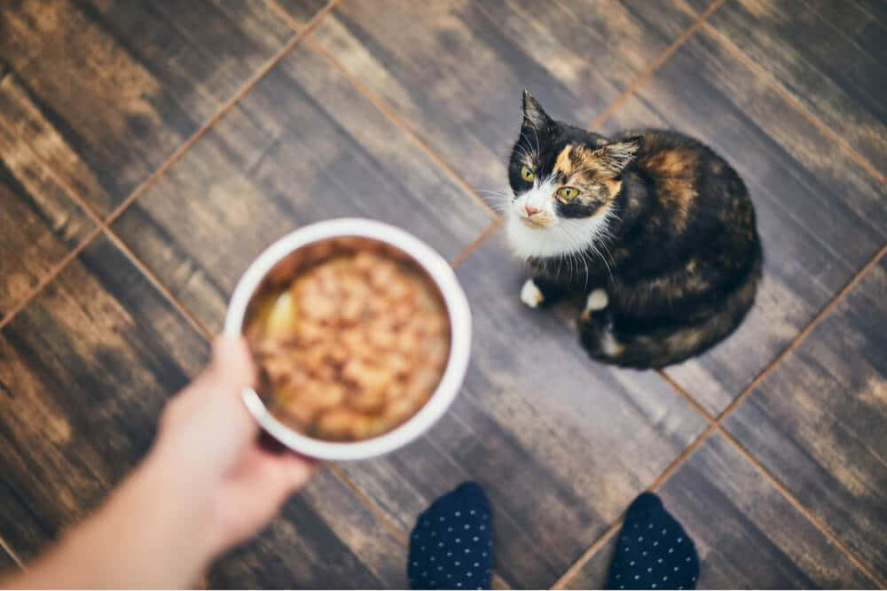

Raw Pork Recipe for Cats

Yummy!
Ingredients
- 28 oz. raw pork, boneless
- 1.6 oz. raw chicken liver
- 1.6 oz. raw beef kidney
- 1 teaspoon finely ground eggshell
- 7 (500 mg) capsules salmon oil
- ½ teaspoon vitamin supplement (see recipe)
- 1 large egg yolk
Instructions
- Combine the eggshell powder and vitamin supplement in a small bowl.
Chop the pork, liver, and kidney into pieces that will fit through the meat grinder.
- Place a bowl under the mouth of the grinder and feed the pork and organs through it.
- Add the salmon oil capsules intermittently while grinding the other ingredients.
- Transfer the mixture to a large bowl and add the dry supplements and egg yolk.
- Add water as needed to combine the mixture then portion and freeze or refrigerate.
Notes: The cut of pork you choose will determine the fat content of the recipe. Pork loin is generally a leaner cut of meat and makes a great starter meat for cats new to raw food. If your cat needs more calories or fat in his diet, you could swap out some of the pork for raw chicken thigh, keeping the skin. If you prefer not to include kidney in your cat’s diet, increase the raw chicken liver to 3.2 oz.